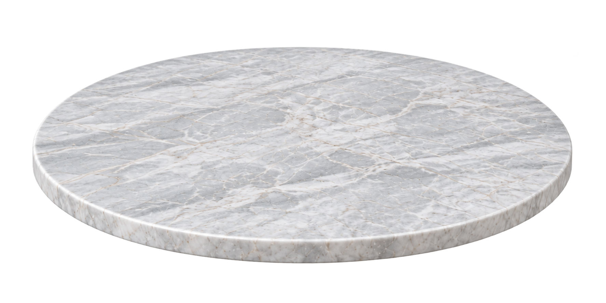
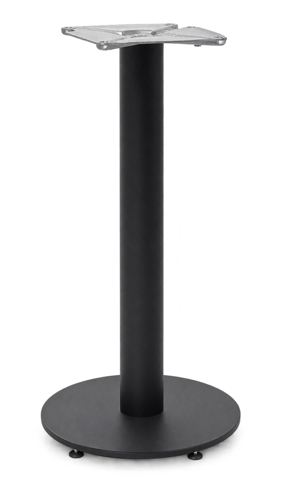

01
Tabla Seçimi
Mermer Türü
Muğla Beyazı1 / 6
KENDİ MASANI OLUŞTUR
Mermer türünü ve masa ayağını ayrı ayrı değiştirerek kombinasyonu anında görüntüle.


Tabla Seçimi
Ayak Seçimi
Kafe masaları için 10 farklı ayak modeli.